Widora板载了USB转TTL调试芯片CP2104，调试串口是丝印为“USB-TTL”的MicroUSB接口，可以通过一根MicroUSB线缆连接到PC即可。
Windows和macOS用户可能需要下载对应的驱动 ：
Windows: http://www.silabs.com/Support%20Documents/Software/CP210x_VCP_Windows.zip
macOS: http://www.silabs.com/Support%20Documents/Software/Mac_OSX_VCP_Driver.zip
Windows用户建议使用putty终端，putty设置如下：
任务管理器中查看串口号，再到putty中设置串口速度115200，串口标签页中将流量控制设置为“无”即可。
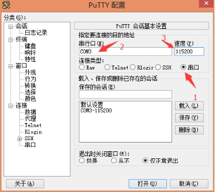
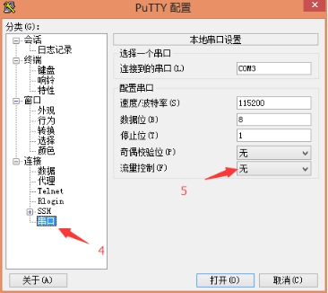
macOS和Linux建议自行安装minicom，安装完设置步骤如下:
查看串口设备，Linux内一般是/dev/ttyUSB0，macOS一般是/dev/tty.SLAB_USBtoUART。设置minicom，”$ sudo minicom -s”,选择Serial port setup后，将A设置为对应的串口设备，E设置为115200 8N1，F设置为No。
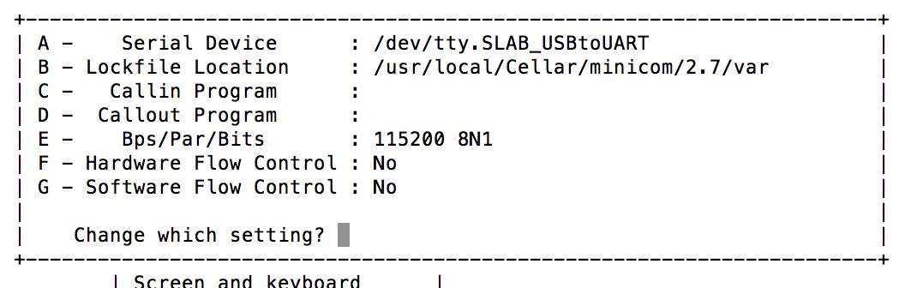
设置好后选择“Save setup as dfl”保存配置，选择Exit退出设置即可。
设置完后敲回车，进入串口控制台。
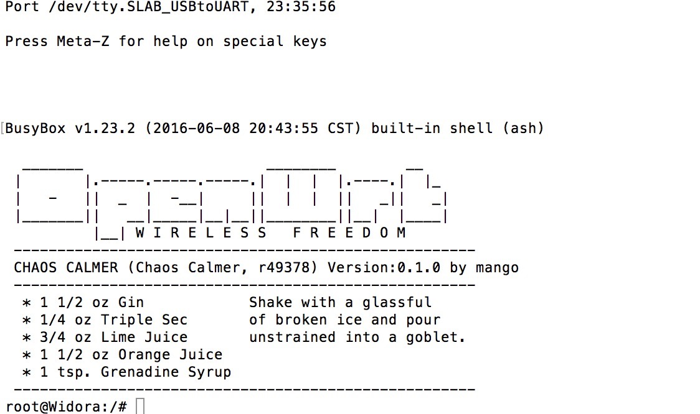
除了通过板载串口登录Widora，还可以通过SSH无线登录Widora，Widora出厂是没有设置root用户密码的，所以首先我们需要设置root用户密码，然后才可以通过SSH登录Widora。具体步骤如下：
Windows用户建议使用putty终端，首先连接PC无线到AP“Widora-XXXX”，连接成功之后，打开putty，选择Telnet连接方式，输入IP地址“192.168.1.1”连接。
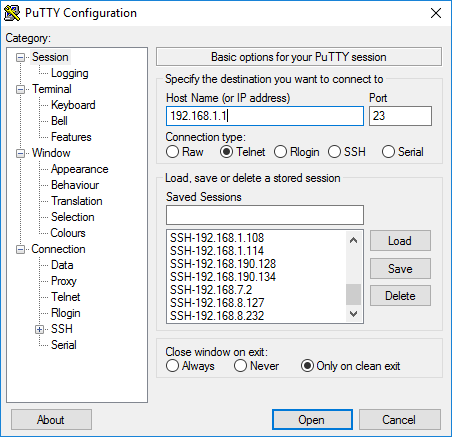
进入如下界面（注意在窗口的顶部可以看到提示说用passwd命令设置登录密码，设置之后Telnet会被禁用，而SSH会被启用）。
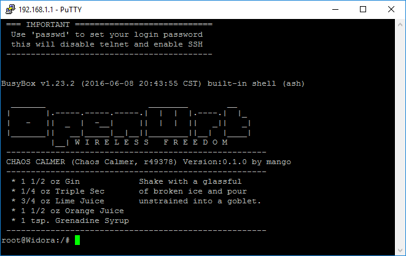
输入passwd命令，按照提示设置密码。设置完成之后exit命令退出Telnet登录。
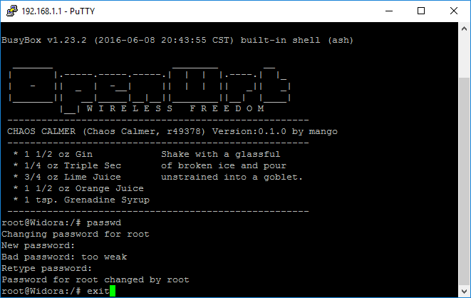
重新打开putty，选择SSH连接方式，输入IP地址“192.168.1.1”连接。
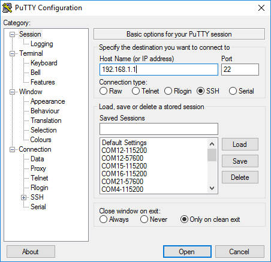
对于第一次连接，会有窗口弹出，选择“是”接受RSA2密匙。
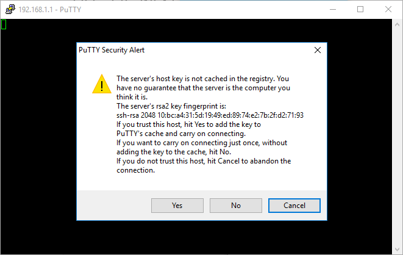
按照提示输入登录用户名和密码，回车登录。
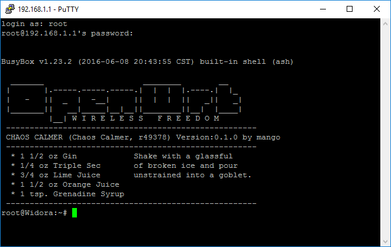
每一个路由器硬件，无线部分的硬件参数都是不同的，为了让不同的硬件参数都发挥出统一的性能，就需要一个校准过程，校准后会生成一个校准文件，所以每个板子的校准文件都是独一无二的。Widora出厂都已校准完毕，以防用户丢失ART数据，请自行导出保存。
进入串口终端，输入cat /proc/mtd
root@Widora:/# cat /proc/mtd dev: size erasesize name mtd0: 00030000 00010000 "u-boot" mtd1: 00010000 00010000 "u-boot-env" mtd2: 00010000 00010000 "factory" mtd3: 00fb0000 00010000 "firmware" mtd4: 00119d29 00010000 "kernel" mtd5: 00e962d7 00010000 "rootfs" mtd6: 00aa0000 00010000 "rootfs_data" root@Widora:/#
这里看到的"factory"就是ART数据文件了，使用dd命令即可备份到一个文件中。“dd if=/dev/mtd2 of=/www/art.bin”。 dd if=/dev/mtd2 of=/www/art.bin
root@Widora:/# dd if=/dev/mtd2 of=/www/art.bin 128+0 records in 128+0 records out root@Widora:/#
通过网络访问Widora，浏览器中输入地址：“http://192.168.1.1/art.bin” 后，会自动弹出下载对话框，下载到电脑即可。
首先确保可以SSH无线登录终端，详见“无线登录Widora”。SSH登录终端之后，和通过板载串口终端类似，在SSH终端输入cat /proc/mtd查看ART分区，然后使用dd命令即可备份到一个文件中。
之后也可以通过浏览器打开“http://192.168.1.1/art.bin” 后，会自动弹出下载对话框，下载到电脑即可。
对于Windows用户，也可以通过WinSCP软件浏览Widora文件系统。
WinSCP软件下载地址： https://winscp.net/eng/docs/lang:chs#下载
安装WinSCP之后打开软件，选择新建站点，选择SCP，输入IP地址192.168.1.1，输入用户名和密码，点击登录。
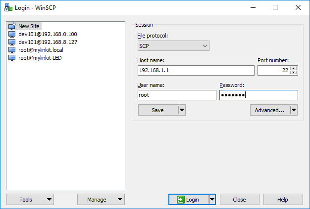
首次登录软件会弹出窗口，点击“是”接受RSA2密匙。
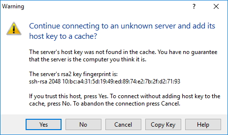
登录之后，用WinSCP就可以自由浏览Widora的文件系统了。找到之前生成的ART文件，下载到本地PC保存。
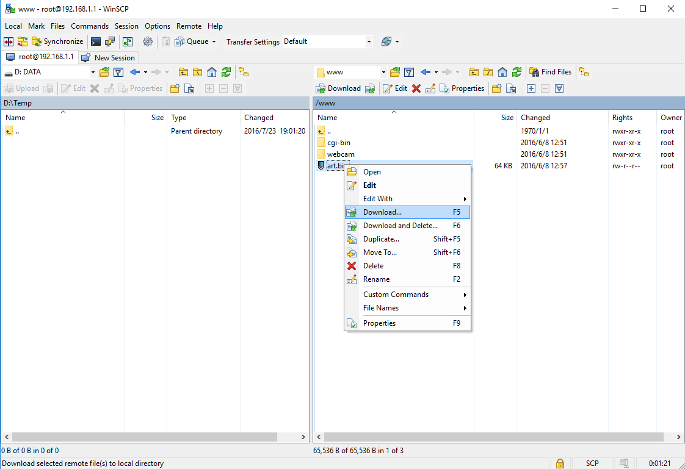
Linux用户，可以通过scp命令获取Widora上的文件。ping一下“192.168.1.1”确保可以连接到Widora，然后输入scp root@192.168.1.1:/www/art.bin ~/Desktop/art.bin， 按照提示，把ART文件保存到Linux电脑的桌面上。
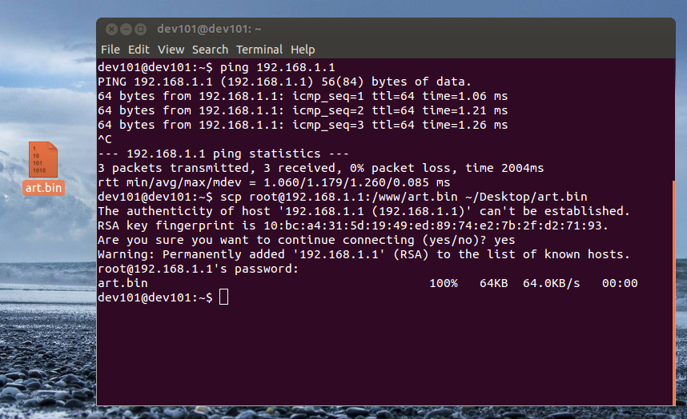